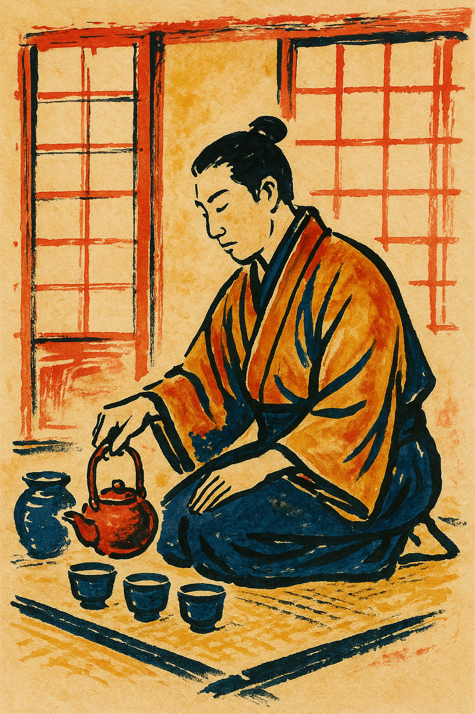

Kontakt

🌸 Čajový koutek v bambusovém háji - přidej se poutníku a přisedni ke stolu. Nabídni si šálek 🍵
📧 E-mail: cajovypoutnik@seznam.cz
„U šálku čaje se někdy narodí to, co slova nevysloví.“

🌸 Čajový koutek v bambusovém háji - přidej se poutníku a přisedni ke stolu. Nabídni si šálek 🍵
📧 E-mail: cajovypoutnik@seznam.cz
„U šálku čaje se někdy narodí to, co slova nevysloví.“